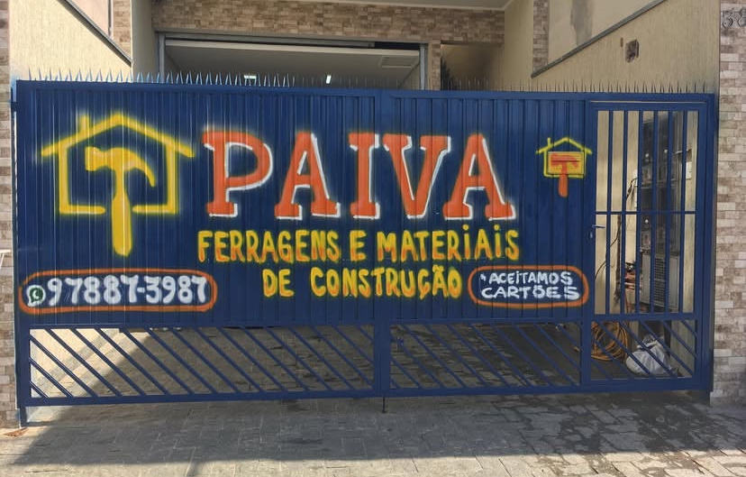
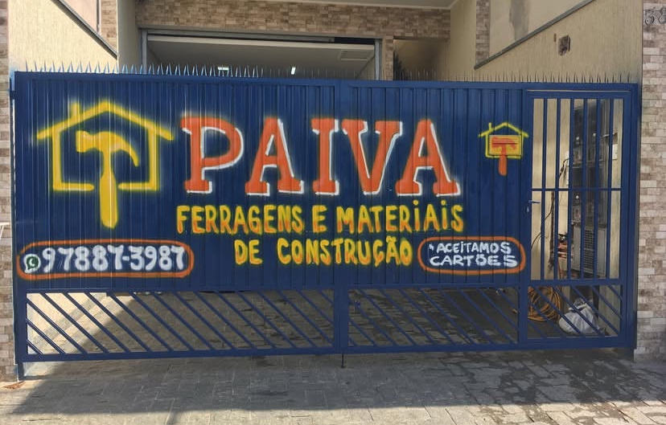

Nossa História
A Paiva Materiais de Construção nasceu em 2021, fundada por Antonio Jailson, movido pelo sonho de empreender e oferecer ao bairro uma loja de confiança, com qualidade e variedade.
Desde o início, a missão sempre foi clara: proporcionar aos clientes não apenas produtos de excelência, mas também um atendimento próximo e humanizado.Com foco em materiais elétricos, ferramentas e hidráulica, a loja se consolidou como uma parceira essencial em obras, reformas e pequenos reparos.
Localizada em Guarulhos - SP, a Paiva atende a todos que buscam soluções em construção, sempre prezando por atendimento de qualidade, variedade de produtos e preço justo. Esses valores são a base da nossa história e o que nos diferencia no mercado.
Olhando para o futuro, nosso objetivo é expandir,abrir novas lojas, aumentar ainda mais a cartela de produtos e continuar crescendo junto com nossos clientes e nossa comunidade.
Na Paiva Materiais de Construção, acreditamos que cada projeto, seja grande ou pequeno, merece começar com uma boa base — e estamos aqui para ajudar você a construir os seus sonhos.


 
